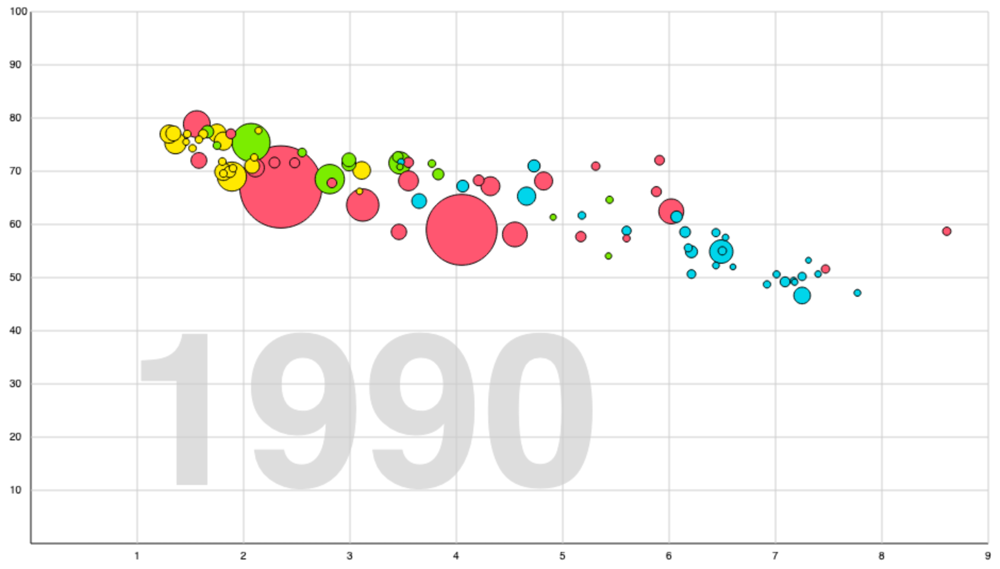

Chapter 14: visuals with canvas and animation
We're going to make bubbles!
Actually, we're going to learn about drawing om the canvas, a way of creating visuals without the help of HTML and CSS. HTML is about documents: text combined with other thing, provided that those other things are rectangular. Some kinds of information simply aren't that well suited for the rectangles-next-to-rectangles-inside-rectangles model of HTML.
14.1: summary and questions
here's Hans Rosling!
Hans Rosling was a Swedish doctor who made an incredible impression, during a 2006 TED talk, with a data visualization about how global health developed in the 20th century. It opened the eyes of many to the awesome scale of how human lives improved in the last 150 years. He founded an organization called Gapminder that makes the software and the data available. We are going to use their data to create our own version of the data visualization that proved so effective. Hans Rosling died in 2017, and his book, "Factfulness", came out in 2018. Highly reccommended.
Watch at least part of his first TED talk (there are more). If you're not interested in the entire talk, watch at least the part from 3:07 to 5:14. That gives you an idea where we're going in this chapter.
We are going to make this graph, including the animation.
14.2: step 1 – coordinates and axis
On almost all 2D computer graphics systems, the x-coordinates go from left to right, and the y-coordinates go from top to bottom. This means that the vertical axis is going the wrong way if you want to draw graphs! That is a problem we can solve with some simple calculations. Also, there's a scaling issue. In the graph, the x-axis goes from 0 to 9 (average children per woman), but you can bet it's actually several hundred of pixels wide. Similar issue for the y-axis. To prevent you from getting bogged down in the arithmetic of these conversions, we created two functions that are incredibly useful:
You're going to use these two a lot. Feel free to give them a shorter name while you're working.
These functions are designed to create the graph in a canvas of (at least) 940 pixels wide, and 530 pixels high. The graph itself will be 900 × 500, and we need some extra space for the numbers along the axes.
- Create an HTML page with a canvas of the right dimensions.
- Add a <script> element for your code.
- Store the 2d-context for the canvas in a global variable. That's OK, because none of our functions is going to read data from this global variable. It exists for creating side-effects, but those side-effects do not create a hidden communication channel in your program.
- Write a function that draws the axis, and the grid for the graph.
- #CCC is a nice grey for the grid lines.
- But the main axis should be black.
- Use loops to create the grid lines, and the text labels.
- Don't go fiddling with pixel coordinates (except for the text-labels). Use data-units (numChildren & age) instead of canvas-pixels. You can draw everything using the canvasX() and canvasY() function.
- The font for the text labels in the image is "normal 10px sans-serif"
There are several ways of splitting a very large JavaScript program into multiple files. There is a modern, but quite complicated ES6 module system, but there is also an ancient facility built into HTML:
Note the closing tags after the first two script tags. They're required! Your browser will not understand it you omit them.
This way of using external Javascript files is very similar to the #include "..." instruction we use in Arduino. In both cases, the external file is read, and 'inserted' into the file that referred to it.
This facility is useful because the dataset is in a very large Javascript file:
Download the file, and store it in the same directory as the HTML file you're working on.
14.3: step 2 – examining the data file
Open the datafile in your browser. Most of the file is the data. There's a bit of code in front that sorts the data in way that works nicer for our graph.
In the HTML file, add a <script src=""></script> element above the script that is already there. Make it include the data file into the HTML file.
Your code can now access the data using a new global variable called countryData.
Solve the following questions by writing a Javascript function that simply returns the answer:
- How many countries are there in the data-file?
- What, according to this data file, is the region of Australia?
- Each country has four arrays with data. We are interested in three of them:
population,lifeExpectancy,birthsPerWoman. All these arrays are equally long in all countries. How long? - Each item in any of the arrays contains the value for a year between 1800 and 2018. The item on position 0 is for 1800, the last item in the array is for the year 2018. What was the population of Argentina in 1990?
- Actually, we lied. One of the array's in one particular country is not just as long as all the others. Which array, in which country?
14.4: step 3 – bubbles!
Drawing circles is done with the .arc() function, and the maths-people have decided that you need π (pi) for that. For those who don't like trigonometry, here's the code:
The variable theContext is the global variable containing the... ...context! If you gave that variable a different name, please change the function code to use your name for the context.
The x and y parameters are in canvas-pixels, and point to the center of the disc. Like the color you give to context.fillStyle etc., the color for the disc is a css color in a string (e.g. "red", "#F894BA" or "rgb(100,0,255)")
14.4.a: warming up
Change your program to:
- draw 5 discs, with different colors and sizes on different locations;
- draw a 1px black line around each disc.
14.4.b: draw a country as a bubble
Countries will be represented in the graph as a disc that Hans Rosling calls a 'bubble'. The position of the bubble is based on the average number of children per woman (horizontal) and the life expectancy (vertical) in a given year. The color is based on the region of the country. Here are some colors that work great:
| region | color |
|---|---|
| africa | rgb(0, 213, 233) |
| americas | rgb(255, 88, 114) |
| asia | rgb(127, 235, 0) |
| europe | rgb(255, 231, 0) |
Getting the radius right is a bit tricky: We want to reflect the country's population size in the size of the disc. Because of how humans perceive the sizes of circles, it should be the area of the bubble that is proportional to the population. We asked Wolfram Alpha how to calculate a radius from a circle area, and came up with the following function for the bubble radius in our graph:
Use the function above in the code of a new function that draws a country on the graph, based on its population size, birthrate and life expectancy for a given year. You should be able to call it like this:
- The first parameter is an object with the data for a country, the second parameter is the year.
- Don't forget to convert years to usable array positions.
- Don't change the
drawDisc()function. Create a new one.
14.5 step 4 – all together now
Let's draw all countries on the graph! Write a new function that:
- Takes a year as an argument.
- Draws all countries based on the population, birthrate and life expectancy for the given year.
- The year is drawn, in a light color and a large font size, in the background of the graph.
- This new function calls the function you created in the previous exercise.
You should be able to test it like this:
and it should look like this:
animation
CSS has some cool features for animations, but those are specific to HTML/CSS. A more generally usesable technique for animation is simply to draw the image multiple times.
14.6: summary and questions
14.6: step 5 – animating through two centuries
14.6.a: warming up
Create you first interval timer in the program you're working on. This is just for warming up.
- Add a function to your program called
doYearStep() - Add a global variable called currentYear. Give it an initial value of 1800.
doYearStep()does not take parameters.doYearStep()prints the current year to the console. Then it increases currentYear by 1. That is (for now) all it does. Test it from the console.- At the end of the script, add a call to
setInterval(). Make sure this call is not inside a function definition. GivedoYearStepas the first parameter, and something like 500 as the second parameter. This should result in thedoYearStep()function being run two times a second. Test your timer.
You don't have to send in any code yet.
14.6.b: stopping a timer
The interval timer you have just created has one major flaw: it never stops! The currentYear variable will continue to increase past 2018, way into the future. It is possible to stop an interval timer:
Every interval timer you start, is given a code number when it is created. That code number (called the timer ID) can be used to stop the timer. Like this:
You call clearInterval() with the timer ID you received as the return value from setInterval()
- Change your program to store the timer Id when it calls
setInterval()in a global variable. - change your
doYearStep()function to stop the timer when the currentYear is larger than 2018.
Now your program should no langer try to travel into the future :-)
14.6.c: animating the graph
Now that our timer no longer causes the currentYear variable to become higher than 2018, it is safe to use currentYear to draw the entire graph. We can animate the graph!
Adapt the function doYearStep() to redraw the graph every time it is called by the timer. Use the currentYear to determine what the year is from which the data should be shown. The function should still stop the timer after currentYear has become 2018. (And not accidentally try to draw the graph for the year 2019!)
Decide a nice interval duration for making the entire animation run kinda smooth, but not too fast for the user to follow what is happening.
14.7: looking at the 20th century
The data shows human progress on an epic scale. For all the stuff that is bad about the world we live in, this is a good thing to see. The graph also highlights some astonishing tragedies.
14.7.a: China
China is easy to follow in the graph. It is the biggest bubbble in the animation. At the end of the 1950's China moves very fast into the lower left corner of the graph. It also moves out quickly again in 1962.
What happened to China in those years?
14.7.b: the eastern front
Perhaps you didn't sign up for this course to be confronted with suffering, so feel free to skip this if you want.
- Change your code to make all bubbles in the graph white or grey,
- except for: Russia, Ukraine, Poland, the Netherlands and Germany.
- Give each of these countries a distinctive color.
- Run the graph again. In which of those countries did the life expectancy drop below 20 during WW2? Can you imagine what that must have been like?
final note
Let's not end this chapter in a gloomy mood. These were the main points of this chapter:
- Data visualization is cool.
- You can write software for grahics and animations!
- In some aspects, human progress has been far more impressive than you perhaps realized.
- You can write software for grahics and animations!
Just for fun, here's Hans Rosling again, this time about the most important invention. It's not the computer or the internet: